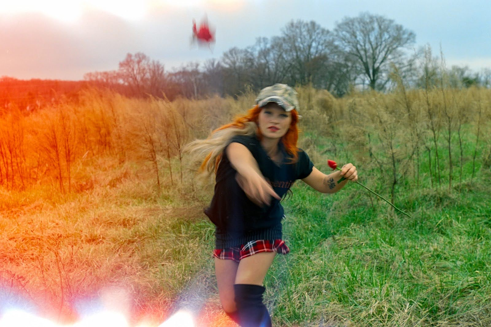
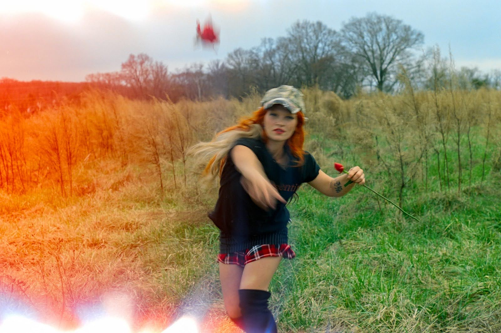
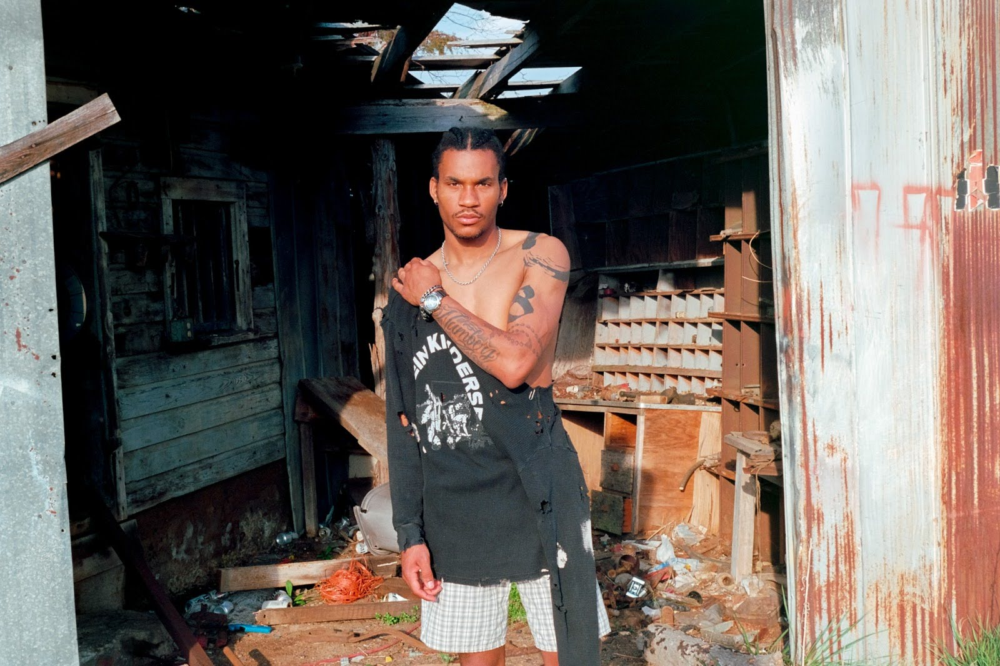
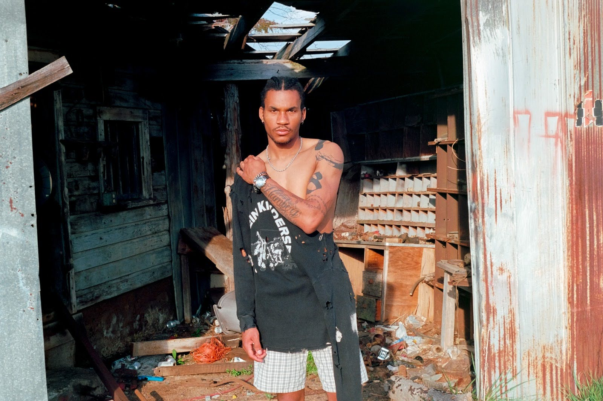
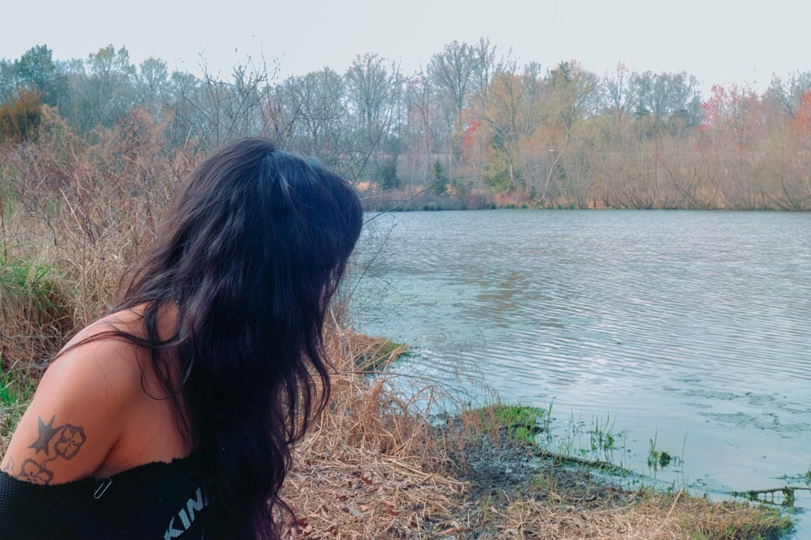
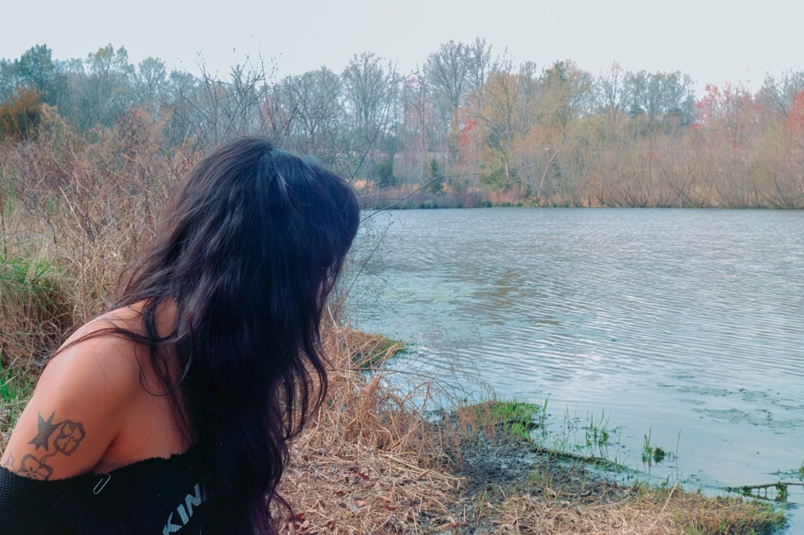

Face - Fissure Collection
Sequence
 



 

 


Concept & Direction
Fissure is a collection born from the quiet distance between ourselves and the places that shape us. It studies the divide—the open fields, empty streets, and small-town silences that both nurtured and restricted our earliest creative impulses. These were landscapes that offered space, but not always a place: environments where inspiration felt scarce, where artistic expression lived in the margins, waiting for a corner of light to grow. This body of work reflects the brand’s Midwest and rural roots, drawing on the tension between wide horizons and the creative claustrophobia that often defines adolescence in small communities. The photos trace the feeling of searching for an outlet, pulling art from the soil, the sky, and every circumstance that once felt limiting. Now, with distance and perspective, Fissure becomes a celebration—a reclamation of creativity in environments that once tried to contain it. The collection honors the subtle cracks where inspiration managed to slip through, the fractures that shaped identity, and the resilience required to create in spite of constraint. It is both an ode to where we come from and a testament to the power of making something meaningful from the spaces that never felt built for us.
Before / After — Color Grade


BeforeAfter
Credits
Photographer / Direction
- Aidan McCollick (8Cigsn4Roses)
- Kyree Matthews
- Logan R. St Hilaire
Models
- Lamine Seck
- Seth Bradford
- Lew Baucom
- Isabella Frers
- Gia McNulty
- Krystal Nguyen
- Stehpen Nkansa
- Ava Skye
Styling
- Myles D. Early
- Kyree Matthews
Additional Assistance
- Charles St Hilaire
- Jose Garcia
- Alias Abrahm
- Will Randal